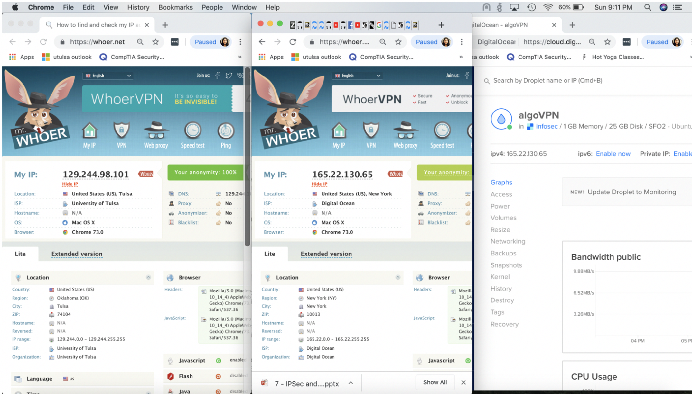

GITHUB
I completed the following introductory learning labs offered on the GitHub website, gaining fundamental skills such as:
- GitHub page navigation
- Adding files
- Formatting content using Markdown
- Creating and merging Pull Requests
- Publishing repositories using GitHub Pages
- Contributing to repositories in the GitHub community
- Uploading existing projects to GitHub
LINUX
I completed a course on Linux Academy in preparation to earn my LPI Linux Essentials certification. The course modules and practical labs gave me an understanding of open-source software, the Linux directory structure, user/permissions management, and interacting with the Linux kernel through the command line.
POWER BI
I auditted a course on edX called Analyzing and Visualizing Data with Power BI.

Through various learning modules and practical labs, I demonstrated the ability to:
- Create reports with data visualizations
- Modify existing reports
- Create and managing data dashboards
- Ask questions with Power BI Q&A
- Share Power BI datasets, dashboards, reports, and workbooks
Using the knowledge I gained from completing the Power BI edX course, I created a dashboard using the Human Resources sample data provided by Microsoft. Click the following link to watch a demonstration of my Power BI dashboard: Saranya Varanasi HR Dashboard
VPN BUILDS
I configured my own IPSec Virtual Private Network in the cloud through an Ubuntu 18.04 server instance on Digital Ocean. I relied on an AlgoVPN directory of scripts to install core dependencies, set up an SSH tunnel, and activate a VPN connection.
Following a similar process, I configured a cloud-based VPN on an Amazon Web Services EC2 OpenVPN server instance.
AMAZON WEB SERVICES
I completed a course on Linux Academy called AWS Essentials. The course modules and practical labs gave me an understanding of many fundamental AWS concepts:
- The AWS console
- Identity and Access Management (IAM)
- Virtual Private Clouds (VPCs), Internet Gateways (IGWs), Route Tables (RTs), and Availability Zones
- Core services such as EC2 Cloud, S3 Data Storage, etc.
- Integrating databases, notification systems, and the Lambda utility to run application code